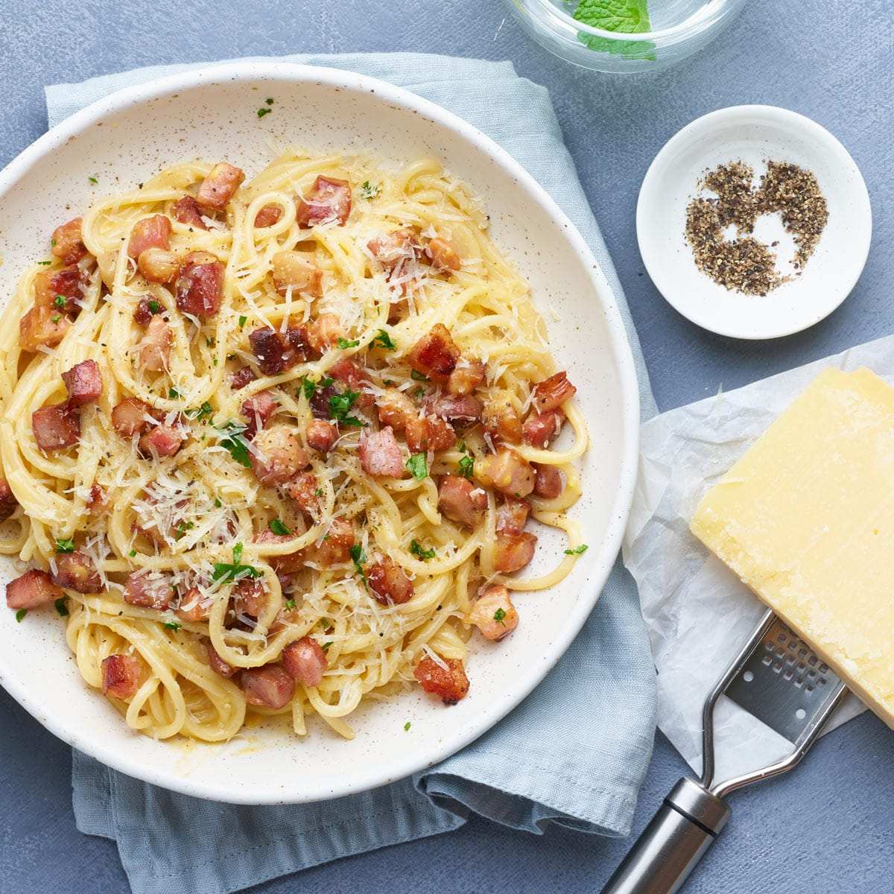
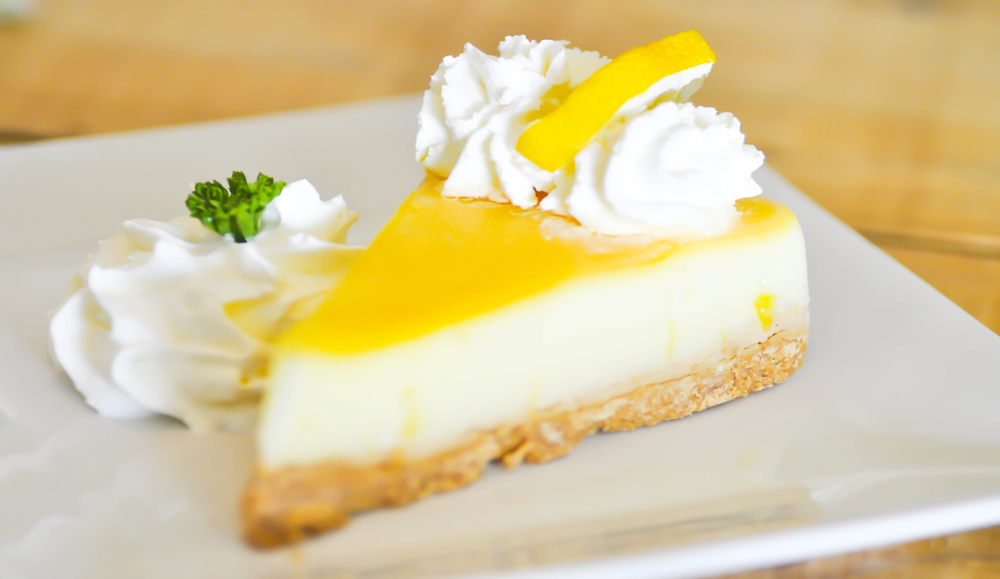
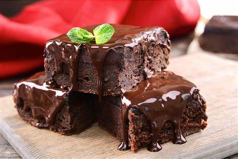
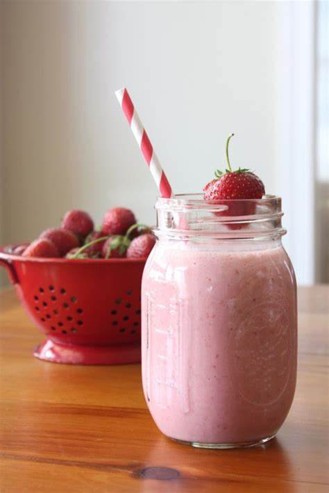

Recetas Destacadas

Ensalada Mediterránea
Una deliciosa mezcla de verduras frescas y sabores del Mediterráneo.
Ingredientes
- Tomates cherry
- Pepino
- Aceitunas negras
- Queso feta
- Aceite de oliva
- Vinagre balsámico
Pasos a seguir
- Corta los tomates y el pepino.
- Mezcla con aceitunas y queso feta.
- Adereza con aceite y vinagre.

Pasta Carbonara
La clásica pasta italiana con queso y panceta.
Ingredientes
- Pasta
- Huevos
- Queso parmesano
- Panceta
- Ajo
- Pimienta negra
Pasos a seguir
- Cocina la pasta según las instrucciones.
- Fríe la panceta con ajo.
- Mezcla con huevo y queso.

Tarta de Limón
Un postre refrescante y ácido con base crujiente.
Ingredientes
- Base de galleta
- Jugo de limón
- Azúcar
- Huevos
- Crema de leche
Pasos a seguir
- Prepara la base de galleta.
- Mezcla jugo de limón con azúcar y huevos.
- Hornea y deja enfriar.

Brownies de Chocolate
Deliciosos brownies con trozos de chocolate en cada bocado.
Ingredientes
- Chocolate
- Mantequilla
- Azúcar
- Huevos
- Harina
- Nueces (opcional)
Pasos a seguir
- Derrite el chocolate con mantequilla.
- Mezcla con azúcar y huevos.
- Agrega harina y hornea.

Smoothie de Frutas
Un batido fresco y saludable para empezar el día.
Ingredientes
- Frutas frescas (fresas, plátano, mango)
- Yogur natural
- Miel
- Leche o agua
Pasos a seguir
- Coloca las frutas en la licuadora.
- Agrega yogur, miel y leche.
- Licúa hasta obtener una mezcla suave.